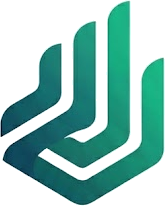

Dados unificados. Decisões mais rápidas. Operação mais lucrativa.
Muitas operações agrícolas enfrentam desafios com dados fragmentados e processos desconectados. Há oportunidades significativas de evolução.
Informações críticas espalhadas entre ERP, planilhas Excel, sistemas de campo e aplicativos diversos.
Tempo perdido consolidando dados manualmente quando poderia estar analisando e decidindo estrategicamente.
Profissionais qualificados dedicando tempo a tarefas operacionais em vez de gestão estratégica.
Sistemas que não funcionam bem em condições reais de trabalho: sol forte, luvas, conectividade instável.
Unificamos todos os seus dados agrícolas em uma única fonte de verdade. Dashboards intuitivos. Alertas automáticos. Decisões baseadas em dados reais.
Conectamos automaticamente todos os seus sistemas: ERP, sensores IoT, máquinas agrícolas, dados climáticos, planilhas e aplicativos de campo.
Dashboards personalizados para cada função: produção, financeiro, operações, comercial. Dados atualizados automaticamente.
Alertas proativos sobre desvios de produção, custos inesperados, oportunidades de otimização e anomalias operacionais.
Processo estruturado em 3 fases para garantir implementação eficaz e resultados mensuráveis.
Mapeamento completo dos sistemas, processos e fontes de dados. Identificação de gargalos e oportunidades de inteligência.
Construção da arquitetura de dados unificada. Implementação de pipelines de integração e validação da qualidade dos dados.
Desenvolvimento de painéis personalizados, treinamento da equipe e configuração de alertas automáticos.
Escolha o nível de inteligência ideal para sua propriedade agrícola.
Mapeamento completo e roadmap estratégico
Data warehouse completo + dashboards personalizados
IA + automação avançada de processos
Experiência real no campo e tecnologia de ponta. A combinação perfeita para o agronegócio moderno.
Nossa solução nasceu de necessidades reais do agronegócio. Conhecemos os desafios porque os vivenciamos.
Arquitetura zero-knowledge: seus dados permanecem sempre sob seu controle. Nunca compartilhados ou vendidos.
Primeiros resultados em 8-16 semanas. Metodologia ágil com entregas incrementais e validação constante.
Plataforma baseada em tecnologias abertas. Você tem controle total e pode evoluir independentemente.
Interfaces otimizadas para uso em campo: telas grandes, controles simples, funcionamento offline.
Métricas claras desde o início. Acompanhamento de economia de tempo, redução de custos e ganhos de produtividade.
Os primeiros insights aparecem já na fase de Descoberta (2-4 semanas). A plataforma completa fica operacional em 8-16 semanas, dependendo da complexidade dos sistemas existentes.
Sim. Nossa plataforma foi projetada para integrar com ERPs agrícolas, sensores IoT, máquinas John Deere/Case/New Holland, sistemas de gestão, planilhas Excel e aplicativos de campo. Fazemos uma análise técnica na fase de Descoberta.
Não. Oferecemos suporte completo para manutenção e evolução da plataforma. Seus colaboradores precisam apenas saber usar os dashboards — treinamos todos durante a implementação.
Absolutamente. Utilizamos arquitetura zero-knowledge com criptografia ponta-a-ponta. Seus dados ficam armazenados em servidores dedicados e nunca são compartilhados, vendidos ou usados para outros fins.
Trabalhamos principalmente com médias e grandes propriedades que possuem múltiplos sistemas, equipes de gestão e volume significativo de dados. Se você já usa ERP agrícola e tem mais de 3 colaboradores na gestão, provavelmente se beneficiará.
Não vendemos SaaS genérico. Somos uma consultoria especializada que constrói plataformas customizadas para cada operação. Cada propriedade tem desafios únicos — nossa solução é moldada para suas necessidades específicas.
Oferecemos suporte técnico contínuo via WhatsApp/Email com SLA definido. Inclui manutenção preventiva, ajustes de dashboards, novos alertas e evolução da plataforma conforme suas necessidades mudam.
O investimento varia conforme o tamanho da operação, número de sistemas a integrar e nível de inteligência desejado. Entre em contato para uma análise personalizada e proposta comercial detalhada com projeção de ROI.
Pare de perder tempo consolidando planilhas. Comece a tomar decisões estratégicas baseadas em dados reais e atualizados.
Solicitar análise personalizada